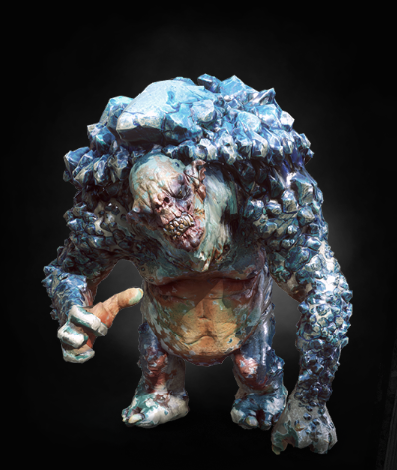

|  |
Bestiary Description:Our winter's cold and deep, frostbite eats your feet, snow falls down and hides the ground and ice trolls wake from sleep!
— folk song heard in northern Kaedwen
Climbing to the top of snow-covered peaks is never a safe endeavor. One can slip and fall into a ravine, be buried in an avalanche — or stumble across ice trolls. Unlike the rock trolls found at lower altitudes, these permafrost-dwelling monsters treat every man they encounter as a possible ingredient for a tasty meal. |